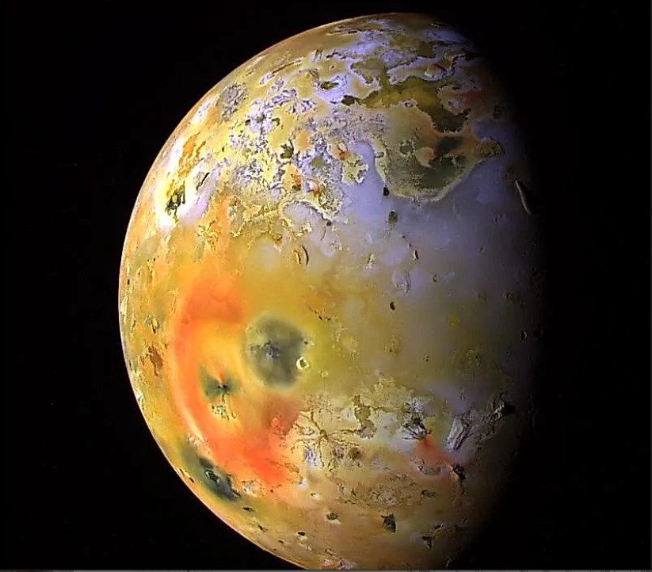

Io — Jupiter`s Volcanic Moon
Io is one of Jupiter`s four largest moons, known as the Galilean moons. It is the most volcanically active body in the entire solar system, with hundreds of active volcanoes constantly erupting.
Io`s intense volcanic activity is caused by Jupiter`s strong gravity. As Io orbits the planet, it is constantly stretched and squeezed, creating heat inside the moon. This process is known as tidal heating and powers its volcanoes.

Facts About Io
- Io was discovered by Galileo in 1610.
- It is the most volcanically active body in the solar system.
- It has over 400 active volcanoes.
- Its surface is covered in sulphur, giving it bright colours.
- It orbits Jupiter in about 1.8 Earth days.
- Io has very little atmosphere.
Io Data
- Diameter: 3,643 km
- Distance from Jupiter: 421,700 km
- Orbit Time: 1.8 Earth days
- Temperature: Around -130°C